List of items that do not belong to a greater category, miscellaneous.
If you are searching for an item from a specific zone, mob, or level it is suggested you use the built in search function by pressing CTRL + F and search from the respective value.
b
Stats: +10 Strength, +5 Agility
a
Stats: +10 Strength, +5 Agility
Quests
List of quests that do not belong to a greater category, miscellaneous.
If you are searching for a quest of a specific level or zone, it is suggested that you use the built in search function by pressing CTRL + F, and search the respective level or zone.
Quest Title
Quest Description: Find the ancient relic hidden in the mountains.
NPCs
List of NPCs that do not belong to a greater category, miscellaneous.
If you are searching for an NPC from a specific zone, level, or quest it is suggested you use the built in search function by pressing CTRL + F and search from the respective value.
b
Stats: +10 Strength, +5 Agility
a
Stats: +10 Strength, +5 Agility
The Necrotic Legion
The Necrotic Legion has silently infiltrated Azeroth, a formidable coalition of necromancers, demons, and dark masterminds. Operating from the shadows, they have begun to seize vast and powerful territories, spreading fear and death with every step. Their ranks are filled with the spirits of the fallen, bound to their will and used as tools of terror and control. With the power to manipulate life and death itself, these dark forces seek to dominate all of Azeroth, unraveling the very fabric of existence. Their plans are as insidious as they are deadly, and if left unchecked, they will bring the world to its knees. It is imperative that they are stopped before their unholy reign spreads beyond salvation.
This content is designed for level 48-60
Orgrimmar has been taken over by powerful necromancers and their demonic minions. The city’s residents have been killed and their souls bound to the will of the Necrotic Legion. The takeover went unnoticed due to other major events happening at the time, particularly the operations of the Scrappers Society and the threat of Naxxramas, which drew attention away from the growing danger in Orgrimmar. The city now lies in ruin, controlled by dark forces. Quests are available starting at level 40, but it is strongly advised to wait until around level 50 before entering, as the area is extremely dangerous. Orgrimmar is just the first major outpost to fall under the Necrotic Legion’s control, with more territories likely to follow.
Necrotic Sentinel (49 - 50+)
Elite
Necrotic Sentinels are the fallen guards of Orgrimmar, corrupted by the dark magic of the Necrotic Legion and transformed into towering demonic enforcers. Once loyal protectors, they now serve as ruthless sentries, wielding massive black axes infused with shadowy energy. Stripped of their humanity, these twisted beings patrol the captured city, ensuring no intruder escapes the Legion's grasp.
Loot: Soulcleaver (~3.64%)
Necrotic Sentinel's can be found roaming invasion sites.
Necrotic Spiritweaver (47 - 48+)
Elite
Spiritweavers are the lowest-ranking members of the Necrotic Legion, yet still formidable in their control over the dead. Specializing in manipulating and binding the spirits of the fallen, they use their dark powers to command restless souls and guard the outermost layers of the Legion's operations. Despite their lower rank, their role is crucial, acting as sentinels and enforcers at the fringes of the Legion’s territory, ensuring that no one interferes with the darker, more powerful forces deeper within.
Loot: Spiritweaver's Band (~0.94%)
Loot: Spiritweaver's Vestments (~1.32%)
Necrotic Spiritweaver's can be found on the outskirts of Necrotic Legion operation zones.
Tortured Orgrimmar Citizen (30 - 38)
Tortured Orgrimmar Citizens are the remnants of Orgrimmar’s population, transformed into unwilling minions by the dark magic of the Necrotic Legion. These once-proud citizens were slain during the Legion’s takeover and have now been twisted into wretched, tortured spirits bound to serve their new masters. Devoid of free will, they are forced to carry out the Legion’s bidding, often appearing as spectral shadows of their former selves, forever bound in a state of torment. These tragic figures patrol their once home, trapped between life and death, unable to escape their cruel fate.
Necrotic Spiritweaver's can be found on the outskirts of Necrotic Legion operation zones.
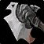
Soulcleaver
Weapon - One-hand Axe
One-hand Axe
70 - 105 Damage (Speed 2.40)
36.5 damage per sec.
+9 Strength
+10 Stamina
+5 Shadow Resistance
Requires Level 48
Source: Rare drop from Necrotic Sentinel's in Necrotic Invasions.
Spiritweaver's Band
Armor - Cloth Waist
Cloth Belt
43 Armor
+12 Stamina
+8 Intellect
+9 Spirit
+12 Shadow Resistance
Requires Level 45
Source: Very rare drop from Necrotic Spiritweaver's in Necrotic Invasions.
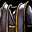
Spiritweaver's Vestments
Armor - Cloth Chest
Cloth Chestpiece
82 Armor
+14 Intellect
+7 Shadow Resistance
Requires Level 47
Equip: Increases shadow spell power by 40.
Source: Very rare drop from Necrotic Spiritweaver's in Necrotic Invasions.
Scrapper's Society
The Scrapper's Society is a group of elite mechanics dedicated to using rare scraps gathered from across Azeroth to engineer inventions aimed at defending and preserving the land. Their creations range from powerful tools to mechanical marvels, each crafted with the goal of saving Azeroth from looming threats.
Scrapper's Society Tier I
Scrapper's Society Tier One, the entry-level branch of this elite organization, focuses on recruiting adventurers to gather rare scraps from the rugged terrain of Westfall. As the lowest tier of Scrappers, they serve as the foundation of the Society’s efforts, scouring Azeroth for vital materials needed for higher-level creations and innovations.
This tier has content designed for level 15-27.
Tipper
Vendor
Tipper, the lowest-ranked Scrapper in the Society, can be found tinkering away in Westfall, eager to exchange his humble creations for scraps gathered from the area. Although his status is modest, Tipper offers a range of valuable weapons crafted from salvaged parts, rewarding adventurers who bring him the rare Westfall scrap he needs.
Tipper, can be found under a pitched tent by flightmaster Thor in Westfall.
Moss
Quest Giver
Moss is an ambitious engineer and one of the lowest-ranking members of the Scrappers Society, stationed in Westfall alongside his good friend Tipper. Despite his junior status, Moss is a vital part of the Society’s efforts, coordinating the reclamation of rare scraps scattered across Azeroth. Known for his keen engineering skills, he focuses on deconstructing rogue machines and sees great potential in materials gathered from powerful constructs like the Scrap Titan. Under a pitched tent near flightmaster Thor, Moss works with Tipper, drawing up blueprints and guiding adventurers eager to support the Scrappers Society’s mission to turn reclaimed scraps into valuable innovations.
Moss, can be found under a pitched tent by flightmaster Thor in Westfall.
Scrap Titan (30+)
Rare Elite
The Scrap Titan is a colossal, self-enhancing harvester that roams Westfall, absorbing rare scraps from fallen golems to fuel its ever-growing power. Seen as a dangerous rogue machine by the Scrapper's Society, they have issued a call for brave adventurers to dismantle the Titan and reclaim its valuable contents to prevent further destruction.
Loot: Scrapper's Ironspidle (15.00%)
Loot: Scrapper's Joltblade (13.00%)
Loot: Scrapper's Nail Gun (20.00%)
Loot: Scrapper's Servo Arm (15.00%)
Loot: Scrapper's Sunderedge (15.00%)
Loot: Westfall Scrap (6x - 11x)
The Scrap Titan can be found wandering the Dead Acre in South Eastern Westfall.
Dismantling the Titan
ELITE Quest
Level 26+ Suggested, 15 Required.
Moss, a determined member of the Scrappers Society, approaches you with a serious look. "Adventurer, we face a critical challenge. The Scrap Titan, a massive harvester, roams the Dead Acre in South Eastern Westfall, absorbing rare scraps from fallen golems. This rogue machine poses a significant threat to our efforts, and we must eliminate it swiftly to reclaim those valuable materials for our upcoming innovations.
The quest can be accepted from Moss in Westfall.
Rewards: Titan's Oil Rag
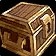
Westfall Scrap
Currency Item
A valuable piece of scrap recovered from mechanical creatures in Westfall.
Can be traded with Tipper in Westfall for Scrapper's weapons.
Source: 6 - 11 can drop from the Scrap Titan in Westfall.
Source: Dropped from Foe Reaper 4000 in Westfall.
Source: Dropped from Harvest Golem in Westfall.
Source: Dropped from Harvest Reaper in Westfall.
Source: Dropped from Harvest Watcher in Westfall.
Source: Dropped from Rusty Harvest Golem in Westfall.
Can be traded and sold on the auction house.
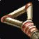
Scrapper's Ironspindle
Staff
28 - 42 Damage (Speed 2.80)
12.5 damage per sec.
+4 Stamina
+5 Intellect
+5 Spirit
Requires Level 15
Source: Can be purchased from Tipper in Westfall for 20 'Westfall Scrap'.
Source: Has a 15.00% chance to drop from the Scrap Titan (30+) in Westfall..
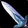
Scrapper's Joltblade
Dagger
15 - 28 Damage (Speed 1.70)
12.6 damage per sec.
+2 Agility
Chance on hit: Casts a bolt of lightning at the target for 13 to 15 Nature damage.
Requires Level 15
Source: Can be purchased from Tipper in Westfall for 20 'Westfall Scrap'.
Source: Has a 13.00% chance to drop from the Scrap Titan (30+) in Westfall..
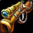
Scrapper's Nail Gun
Gun
20 - 37 Damage (Speed 2.60)
11.0 damage per sec.
Chance on hit: Sunders the target's armor, reducing it by 4% per Sunder Armor and causes a high amount of threat. Threat increased by attack power. Can be applied up to 5 times. Lasts 30 sec.
Requires Level 15
Source: Can be purchased from Tipper in Westfall for 20 'Westfall Scrap'.
Source: Has a 20.00% chance to drop from the Scrap Titan (30+) in Westfall..
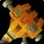
Scrapper's Servo Arm
One-hand Mace
25 - 48 Damage (Speed 2.60)
14.0 damage per sec.
+3 Strength
+3 Stamina
Requires Level 15
Source: Can be purchased from Tipper in Westfall for 20 'Westfall Scrap'.
Source: Has a 15.00% chance to drop from the Scrap Titan (30+) in Westfall..
Scrapper's Sunderedge
Two-hand Sword
35 - 50 Damage (Speed 2.60)
17.0 damage per sec.
+2 Strength
+8 Stamina
Requires Level 15
Source: Can be purchased from Tipper in Westfall for 20 'Westfall Scrap'.
Source: Has a 15.00% chance to drop from the Scrap Titan (30+) in Westfall..
Titans Oil Rag
Armor - Cloth Helmet
Cloth headpiece
21 Armor
+3 Stamina
Source: Rewarded from the quest, 'Dismantling the Titan'.
Scrapper's Society Tier II
Scrapper's Society Tier Two represents the next level in the organization, where skilled adventurers and mechanics tackle complex pieces of scrap gathered from the darker corners of Azeroth. This tier, led primarily by dwarves, showcases their unmatched expertise in brutal craftsmanship, forging formidable inventions designed to unleash vicious attacks and overpower foes with raw, devastating force. A critical role of Tier II involves reclaiming stolen scrap from the deviant forces lurking in Duskwood, ensuring these valuable materials remain in the Society's control. The branch’s setups, marked by rugged, battle-hardened equipment, can be found in Darkshire, nestled within the shadows of Duskwood, where they prepare to deploy their savage weaponry in defense of Azeroth.
This tier has content designed for level 25-36.
Stoffer
Vendor
Stoffer is a seasoned dwarf engineer hailing from the unforgiving wetlands, where he developed a deep respect for raw power and learned how to wield it with precision. Known for his rough demeanor and relentless approach, Stoffer crafts weapons that may not always conserve materials but deliver devastatingly effective results. His creations are brutal, engineered to crush and overpower enemies with unrestrained force. Found in Darkshire, Stoffer eagerly trades his fearsome inventions with adventurers who bring him rare and complex scraps, rewarding those who seek tools with the sheer might to dominate in battle.
Stoffer, can be found wandering around all of Darkshire.
Meena
Quest Giver
Meena, a low-ranked but formidable dwarf in the Scrapper's Society, roams the shadowed roads along Duskwood’s eastern edge. Known for her sharp eye and instinctive grasp of scrap’s hidden value, she spends her days searching for lost remnants and treasures, seeing potential in every discarded piece. Though modest in rank, Meena is not to be trifled with; her tenacity and resourcefulness make her a respected figure among those who know her. Ever on the lookout for allies, she eagerly enlists capable adventurers to aid the Society’s mission, ensuring that every piece of reclaimed scrap strengthens Azeroth’s defenses.
Meena, can be found wandering the roads of Eastern Duskwood, sometimes entering buildings.
Gusward
Quest Giver
Gusward is a seasoned dwarf engineer and a key strategist for the Scrapper’s Society, residing in the Darkshire town hall. With a sharp mind for planning and organization, Gusward works closely with the local governors, devising methods to efficiently collect and utilize valuable scrap for the Society's needs. His expertise lies not only in crafting but also in understanding how to strategically reclaim lost resources. Gusward is always awaiting powerful adventurers who are willing to take on daring quests to confront the formidable deviants who have stolen vast amounts of scrap. His role is critical in ensuring that the Society’s resources are used to their fullest potential in the fight to protect Azeroth.
Gusward, can be found in the Darkshire Town Hall in Duskwood.
Olarek (37+)
Elite
Olarek is a shrewd and ruthless worgen, known for his cunning mind and tactical brilliance. Though not the alpha of the Nightbane, he plays a pivotal role as the strategist behind their operations, masterminding the relentless theft of precious scrap meant for the Scrapper’s Society. Operating from the shadows, Olarek has turned the once-disorganized raids into a coordinated effort, amassing resources for the Nightbane’s mysterious goals. He prowls around his camp south of Darkshire, surrounded by loyal worgen who protect him fiercely. With his raw power and intellect, Olarek has become a formidable threat, and those who dare face him should be prepared for a vicious fight.
Loot: Stolen Scrap (11x - 17x)
Olarek, can be found in a small Nightbane camp south of Darkshire left of the Tranquil Gardens.
Scrap Reclamation
Quest
Level 27 Suggested, 25 Required.
Meena has noticed something troubling—valuable scrap that’s been collected for the Scrapper’s Society has been mysteriously disappearing overnight. The scraps are essential for the Society’s creations, and Meena suspects that several groups of thieves are behind the thefts. She needs you to retrieve 15 pieces of stolen scrap that have been taken in the dead of night. These stolen materials are being hoarded by a variety of dangerous figures lurking throughout the region.
The quest can be accepted from Meena in Duskwood.
Rewards: Tattered Scrapper's Pauldrons or Scrapped Silk Cloak
Sabotage From the Shadows
ELITE Quest
Level 34+ Suggested, 25 Required.
Listen closely, friend. We’ve uncovered the mind behind the recent scrap thefts—Olarek, a cunning worgen who’s been orchestrating these raids on behalf of the Nightbane. He may not be their leader, but he’s the brains behind their operation, coordinating every stolen piece of scrap that should be ours. He prowls around a worgen camp just south of Darkshire, surrounded by his loyal pack. Olarek is no easy target. He’s a powerful foe and makes sure to keep himself well-guarded. If you can take him down, it’ll cripple their thieving operations and send a clear message. Bring me proof of his defeat, and I’ll see to it that the Society rewards you for your bravery.
The quest can be accepted from Gusward in Duskwood.
Rewards: 50 Stolen Scrap.
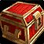
Stolen Scrap
Currency Item
A valuable piece of scrap reclaimed from deviants in Duskwood.
Can be traded with Stoffer in Duskwood for Brutal Scrapper's Equipment.
Source: Chance to drop from humanoid and undead enemies in Duskwood.
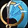
Brutal Scrapper's Carver
Main-hand Fist Weapon
21 - 39 Damage (Speed 1.70)
17.6 damage per sec.
+2 Melee Haste Rating
Chance on hit: Claw the enemy, causing 43 to 59 damage.
Requires Level 25
Source: Can be purchased from Stoffer in Darkshire for 50 'Stolen Scrap'.
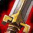
Brutal Scrapper's Cleaveblade
One-hand Sword
35 - 67 Damage (Speed 2.70)
18.9 damage per sec.
+12 Agility
Chance on hit: Wounds the target for 75 damage.
Requires Level 25
Source: Can be purchased from Stoffer in Darkshire for 50 'Stolen Scrap'.
Brutal Scrapper's Goreaxe
Two-hand Axe
70 - 98 Damage (Speed 3.30)
25.5 damage per sec.
+14 Strength
Chance on hit: Wounds the target causing them to bleed for 70 damage plus an additional 85 (based on weapon damage) over 15 sec.
Requires Level 25
Source: Can be purchased from Stoffer in Darkshire for 50 'Stolen Scrap'.
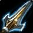
Brutal Scrapper's Skullpiercer
Polearm
55 - 69 Damage (Speed 3.30)
21.4 damage per sec.
+8 Strength
+8 Agility
+8 Stamina
Requires Level 25
Source: Can be purchased from Stoffer in Darkshire for 50 'Stolen Scrap'.
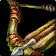
Brutal Scrapper's Stinger
Crossbow
35 - 54 Damage (Speed 2.80)
15.9 damage per sec.
+7 Ranged critical strike rating.
Chance on hit: Stings the target, causing 237 Nature damage over 15 sec. Only one Sting can be applied per enemy.
Requires Level 25
Source: Can be purchased from Stoffer in Darkshire for 50 'Stolen Scrap'.
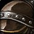
Tattered Scrapper's Pauldrons
Armor - Leather Shoulders
Leather Shoulders
77 Armor
+10 Agility
+4 Spirit
Requires Level 25
Source: Reward choice from the quest, 'Scrap Reclamation' in Duskwood.
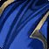
Scrapped Silk Cloak
Armor - Back
Cloak
19 Armor
+3 Stamina
+7 Intellect
Requires Level 24
Source: Reward choice from the quest, 'Scrap Reclamation' in Duskwood.
Scrapper's Society Tier III
Scrapper's Society Tier Three is where goblin craft meets clever negotiation. Though they’ve already secured premium scrap from all corners of Azeroth, the goblins have set up a unique system to ensure adventurers truly earn the right to access it—and perhaps, serve the goblins’ own “interests” along the way. To unlock this high-grade scrap, adventurers must obtain commendations from prominent figures throughout Stranglethorn by completing tasks and favors. These commendations, while proof of loyalty, also serve as a valuable currency for the goblins, allowing them to gain special privileges around Booty Bay. With enough commendations, adventurers can bargain for scrap, which they can then trade for powerful, specialized items crafted by the Scrapper’s Society.
This tier has content designed for level 35-48.
Bizzle
Vendor
Bizzle is a sharp-minded goblin engineer at Tier III of the Scrapper’s Society, known throughout Booty Bay for his knack for crafting sophisticated equipment that gives adventurers a powerful technical edge in battle. With a relentless focus on precision and efficiency, Bizzle dedicates his time to designing complex mechanical devices—each piece intricately engineered to outmaneuver and outwit the enemy. While his creations don’t come cheap and often require a bit of extra incentive to access, the advantage they provide on the battlefield makes them well worth the investment. Adventurers who cross paths with Bizzle can expect access to some of the most advanced goblin gear available, each designed to push the limits of battlefield innovation, and a small price to pay for the goblins’ own benefit.
Bizzle, can be found in Booty Bay.
Zol'anza
Daily Quest Giver
Zol'anza is a well-connected figure within Stranglethorn, though he operates independently from the Scrapper's Society itself. Known as a Commendator, Zol'anza offers his highly sought-after commendations to adventurers who are willing to do him a few “favors” around the jungle. These tasks often involve slaying dangerous beasts and gathering valuable creature artifacts scattered throughout the region. His commendations carry weight within the Scrapper's Society, making them a valuable asset for anyone hoping to strike a deal with the goblins and gain access to exclusive supplies.
Zol'anza, can be found walking the roads of Stranglethorn Vale.
Bloodscalp Bindings
Daily Quest
Level 36 Suggested, 35 Required.
Ah, ya come to help, eh? Good, good—Stranglethorn could use a few more brave souls like yaself. De Bloodscalp tribe, dey be causin’ all sorts of trouble up north. Dey don’t know when ta quit, always stirrin’ up chaos and claimin’ lands dat don’t belong to ‘em. If ya got de strength, go on up dere an’ teach dem a lesson. Bring me proof—a handful of Bloodscalp Bindings, fifteen should do. Dat’ll show dem we mean business. Do dis for me, an’ ya might just earn yaself one of my commendations. De Scrappers value my word, ya see—wid it, ya could get yerself some good deals down in Booty Bay. So, what do ya say? Gonna help me put de Bloodscalp back in dere place?
The quest can be accepted from Zol'anza in Stranglethorn Vale
Rewards: x1 Zol'anza Commendation
Zanzil Blood
Daily Quest
Level 38 Suggested, 35 Required.
Ah, ya back for more work? Good. Dis jungle got more dangers than even a seasoned warrior like yaself could count. But right now, I got my eyes on de Zanzil followers. Dey be messin' with all kinda dark magics, and it’s startin' ta spread trouble all ‘round Stranglethorn.
Here’s de task: bring me back some of dat Zanzil Blood. Ya can find it on de zombies an' Naga who walk in his name. Fifteen vials should be plenty. Dis stuff’s rare, an' de Scrappers be very interested in what it can do. Bring it back, an’ dere’s a commendation in it for ya—valuable enough to trade for some special favors down in Booty Bay. So, whaddya say? Ready to take on de undead?
The quest can be accepted from Zol'anza in Stranglethorn Vale
Rewards: x1 Zol'anza Commendation
Broken Mosh'Ogg Weapons
Daily Quest
Level 40 Suggested, 35 Required.
De ogres of Mosh’Ogg, dey’re not too smart, but dey pack a mighty punch. Dey’ve been wieldin' crude weapons, nasty tings dat still hurt if ya get too close. But I got a plan for 'em. If ya bring me a bunch of dose broken Mosh’Ogg weapons—let’s say, five—I’ll see if we can turn ‘em into someting useful. Ogres don't exactly know how ta take care of dere tools, eh? Ya do dis for me, and dere’ll be another commendation in it for ya. De Scrappers, dey know what my word is worth. So, what d’ya say? Head up dere an’ show dem ogres dat dere carelessness got consequences.
The quest can be accepted from Zol'anza in Stranglethorn Vale
Rewards: x1 Zol'anza Commendation
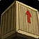
Imported Premium Scrap
Currency Item
A Scrap of utmost quality, imported from all of Azeroth these scrap often find themselves in the hands of the goblins of Booty Bay.
Can be traded with Bizzle in Booty Bay for Ingenious Scrapper's Support Items.
Source: Can be purchased from Bizzle in Booty Bay for 1x Zol'anza Commendation.
Zol'anza Commendation
Currency Item
Zol'anza's commendations are highly prized by the goblins of the Scrapper's Society, who covet them for the influence they carry in Booty Bay, allowing them to strike advantageous deals and secure rare resources.
Can be traded with Bizzle in Booty Bay for Imported Premium Scrap.
Source: Daily quests given by Zol'anza in Stranglethorn Vale.
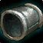
Bloodscalp Bindings
Quest Item
These bindings, taken from the fallen Bloodscalp tribe, are prized by Zol'anza as symbols of conquest and power, proof of a worthy foe vanquished.
Used in the quest, 'Bloodscalp Bindings' from Zol'anza in Stranglethorn Vale.
Source: Drops from enemies in northern Stranglethorn with the prefix 'Bloodscalp'.
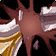
Broken Mosh'Ogg Weapon
Quest Item
Shattered remnants of Mosh'Ogg ogre weaponry, Zol'anza values these broken pieces for their raw materials, which can be repurposed for crafting stronger, more lethal tools.
Used in the quest, 'Broken Mosh'Ogg Weapons' from Zol'anza in Stranglethorn Vale.
Source: Drops from Mosh'Ogg ogres in north-eastern Stranglethorn Vale'.
Zanzil Blood
Quest Item
The dark and corrupted blood of the Zanzil zombies and Naga, Zol'anza seeks this rare substance for its magical properties and potential in his personal rituals.
Used in the quest, 'Zanzil Blood' from Zol'anza in Stranglethorn Vale.
Source: Drops from Zanzil mobs in Stranglethorn Vale.
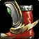
Agile Scrapper's Surgerunners
Armor - Mail Boots
Mail Boots
121 Armor
+8 Strength
+9 Agility
+12 Stamina
Requires Level 35
Equip: Increases run speed by 5%.
Source: Purchased from Bizzle in Booty Bay.
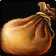
Bizzle's Bottomless Bomb Bag
Offhand
Held in Off-hand
+8 Stamina
+10 Fire Resistance
Requires Level 35
Use: Inflicts 132 to 218 Fire damage and incapacitates targets for 3 sec in a 3 yard raidus. Any damage will break the effect. Unreliable against targets higher than level 50 (2 Min Cooldown).
Source: Purchased from Bizzle in Booty Bay.
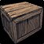
Bizzle's Regenerative Ice Box
Trinket
Trinket
Requires Level 35
Equip: When struck in combat has a 1% chance of inflicting 50 Frost damage to the attacker and freezing them for 5 seconds.
Use: You become encased in a block of ice, protecting you from all physical attacks and spells for 10 sec, but during that time you cannot attack, move or cast spells. Also causes Hypothermia, preventing you from recasting Ice Block for 30 sec. (15 Min Cooldown)
Source: Purchased from Bizzle in Booty Bay.
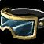
Precise Scrapper's Dominator Goggles
Armor - Cloth Helmet
Cloth Helmet
52 Armor
+19 Intellect
+8 Spirit
Requires Level 35
Use: Channels a bolt of lightning and hurls it towards all enemies in front of the caster causing 147 to 167 Nature damage. The caster is then surrounded by a barrier of electricity for 10 min. (8 Min Cooldown)